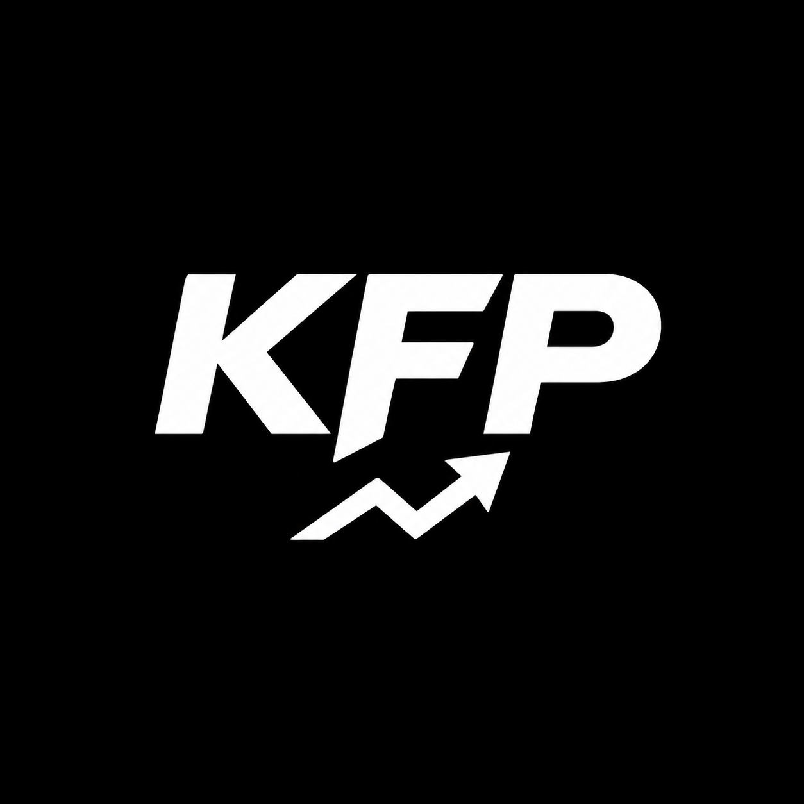

Arsenal vs Chelsea
Données à calculer—Victoire Arsenal
—Nul
—Victoire Chelsea
Pronostic : —
Scores exacts : —

KabsfootprDes analyses statistiques structurées, basées sur des données vérifiables. KFP ne promet jamais un résultat certain : il mesure, compare et sélectionne.
Forme, buts, domicile/extérieur, classement, calendrier, absences, blessures, suspensions, cartons rouges, compositions probables, météo, terrain et contexte.
Règles statistiques fixes et reproductibles. Pas d'intuition et pas de chiffres inventés.
Un match doit satisfaire les critères de qualité KFP avant d'être recommandé.
Les résultats sont conservés pour mesurer la performance réelle du système dans le long run.
Une future formule premium pour accéder à davantage d'analyses et de statistiques, sans promesse de gains garantis.